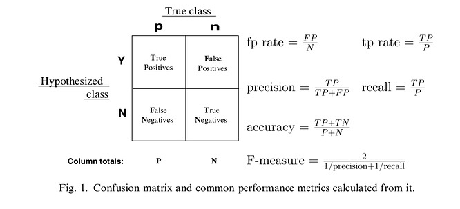

实际例子
我们从例子开始往往能够更容易理解问题:
下面的表格是一个经过分类器分类的样本数据, Class这一列表示真实的分类, Score这一列表示分类器预测样本为p的概率, 下面我们用ROC和AUC来评估这个分类器, 主要是为了演示一下AUC和ROC是如何得到的。
我们的程序主要依赖是:
- python3.6
- numpy1.9
我们把这个样本数据保存到一个数组中:
1 | import numpy as np |
基础知识

大家应该都见过上面的混淆矩阵, 假设这是一个二分类任务, 样本分为正负两种(True Class), 当然我们的分类器也是把样本分为这两种(Hypothesized class), 因为分类器不可能百分百准确, 所以可以得到四个指标:
- True Positive: 实际分类是Positive, 预测结果也是Positive
- False Positive: 实际分类是Negtive, 预测结果是Positive
- False Negtive: 实际分类是Positive, 预测结果是Negtive
- True Negtive: 实际分类是Negtive, 预测结果是Negtive
(True和False表示预测结果是否正确, Positive和Negetive表示样本预测的分类)
下面用函数metrics来计算所有的四个指标, 参数是分类阈值y
1 | def metrics(data, y): |
1 | metrics(data, .5) |
{'tp': 6.0, 'fp': 4.0, 'tn': 6.0, 'fn': 4.0}
理论知识
ROC(Receiver Operating Characteristic)和AUC是比较常用的两种分类器的性能评价指标。他们和我们常用的Precision/recall/f-score之间是有区别的, 因为ROC往往用一条曲线来表示, 它评价的是分类器的不同阈值的性能, 综合所有的阈值变化范围就能看出这个分类器的性能。而AUC(曲线下的面积)是对ROC的一个总结性指标, 下面还是举例子说明比较清楚:
上图是三个分类器的三条ROC曲线, 横坐标表示预测为positive但是实际是negtive的样本数除以总的negtive样本数, 纵坐标表示预测为positive实际为positive的样本中除以总的positive样本数。用代码清楚的表示为函数xy:
1 | def xy(params): |
看了上面的代码, 你应该可以看出来, fpr越小表示分类器在negtive样本数的表现越好, 而tpr越大表示分类器在positive样本上的表现越好, 所以我们选择分类器的时候就要选择较大的tpr和较小的fpr, 但是这是一个权衡问题, 因为tpr越大相应的fpr就会越大, 体现在ROC曲线上就是上图那样的曲线, 如果分类器按照样本的概率随机分类, 那么会得到虚线所示的对角线。
绘制ROC曲线
有了上的函数, 我们可以通过变化阈值y来产生不同的fpr和tpr, 然后将所有的指标绘制到图上, 就能得到ROC曲线, 下面是具体的代码:
1 | import matplotlib.pyplot as plt |
绘制曲线, 下面我们绘制三种曲线:
- 按照样本的预测概率绘制
- 将所有概率预测为随机数
- 将所有概率预测为0.5
1 | # 按照预测结果绘制 |
从图中我们可以看到, 随机数概率基本上就是写对角线, 而固定0.5的概率之所以看起来是对角线, 因为XY值只有两种(0,0)和(1,1)。
计算AUC值
有了这个曲线以后, 我么要计算曲线下的面积就是AUC的值, 使用循环的方式, 把曲线下的面积分割为多个梯形, 然后累加每个梯形的面积即可:
1 |
|
0.9 1.0
0.4 0.7
0.1 0.3
0.0 0.2
0.6799999999999999
注意
本文由jupyter notebook转换而来, 您可以在这里下载notebook
有问题可以直接在下方留言
或者给我发邮件675495787[at]qq.com
请记住我的网址: mlln.cn 或者 jupyter.cn